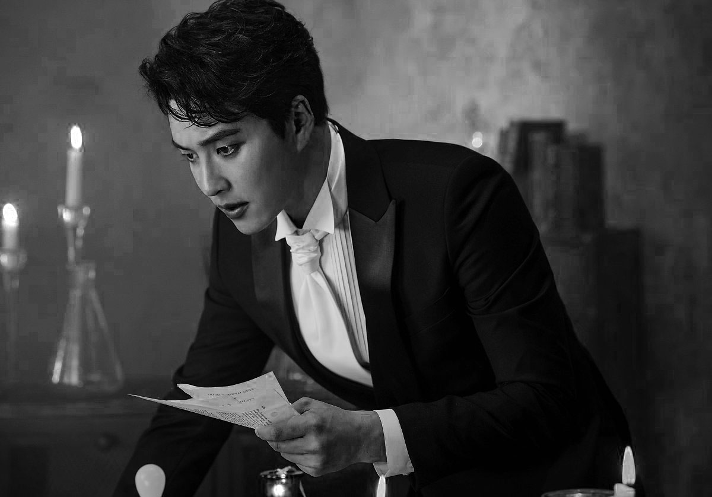

Min-Woo Hyuk
소위 ‘머글픽’이라고 불리는 뮤지컬계의 황태자 민우혁. 과연 ‘그’의 무엇이 이 황태자의 마음을 사로 잡아 잉꼬부부로 소문 났던 부부의 가정까지 파탄내었나?
셀럽은 맞는 것도 아닌 척, 아닌 것도 맞는 척 하는데에 도가 튼 인물들. 그럼에도 불구하고 민우혁이 미디어에서까지 ‘소유욕’을 드러낸 것은 굉장히 흥미로운 부분이다. <해X투게더>,
그들이 더 놀라워했던 점은 <살림남>,<슈퍼맨이 돌아왔다> 등의 프로그램에서 가정에 헌신적이고 다정한 가장의 면모를 보여줬던 민우혁이 '그'와의 관계를 시작하면서부터 서서히 변해갔다는 것이다. 소리 지르는 것마저 폭력이라 여기며 조심하던 그가 '그'에 관해서라면 악다구니를 지르고 급기야 물리적인 폭력을 휘두르는 모습을 보여주어 다들 혀를 내두르곤 했다고.
일간에서는 이런 그의 비밀스러운 변화에 '나쁜 남자' 타이틀을 붙여가며 즐기기도 한다. 그의 준수하고 강렬한 외모에 어울린다나. 폭력남이라는 꼬리표가 달려 잘되는 셀럽 몇 없으나 그는 오히려 최근 더 많은 대극장 뮤지컬 주연역 뿐만 아니라 영화, 드라마 섭외 제의도 들어오고 있다고 한다.
와중에 다행인 점은 '그' 앞에서는 다정한 '척'이라도 한다는 것일까. '그' 또한 민우혁의 비밀 아닌 비밀 소문을 알고 있는 듯 하나 그 점을 책 잡아 헤어지자는 요구는 하지 않는다고. 연예부 기자나 그 관계자들은 우스갯소리로 민우혁의 '밤일 실력'을 그 이유로 삼는다고 한다. 믿거나 말거나.